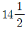
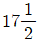
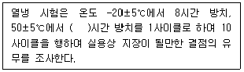
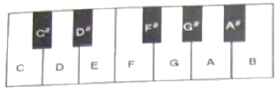
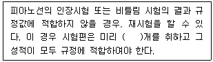

피아노조율기능사 (2008-02-03 기출문제)
1과목: 임의 구분
1. 힛치핀(Hitch pin)과 관련된 설명으로 옳은 것은?
- 상부브리지와 힛치린 사이에서 현이 진동한다.
- 현의 위쪽은 튜닝핀에, 아래쪽은 힛치핀에 현을 걸기 위한 장치이다.
- 힛치핀은 목골에 박혀있고 현의 아래쪽을 걸기 위한 장치이다.
- 힛치핀은 브리지에 박혀있고 음의 잡음 방지와 증대효과가 있다.
(정답률: 알수없음)

2. 일반적인 튜닝핀의 조건 중 틀린 것은?
- 길이는 약 60 ~ 64mm
- 지름은 6.75 ~ 7.25mm
- 박히는 부분에는 20 ~ 25mm의 나사산 가공
- 머리부는 사각형으로 하고 10/100 ~ 14/100의 테이프 부착
(정답률: 알수없음)
3. 다음 페달 중 긴 레일에 붙여진 펠트가 현과 해머사이에 들어가므로 직접 타현을 막아 적은 음량으로 만드는 역할을 하는 것은?
- 댐퍼 페달
- 머플러 페달
- 고·저음 페달
- 쉬프트 페달
(정답률: 알수없음)
4. 원칙적인 피아노 액션에 대한 설명 중 틀린 것은?
- 업라이트형 액션은 브래킷에 의해서 피아노의 몸체에서 떼었다 붙였다 할 수 있는 구조이어야 한다.
- 업라이트형 해머 받드의 센터핀은 원칙적으로받드 플레이트에 따라서 고정되어 있어야 한다.
- 업라이트형의 해머 레일 또는 언더 레일에는 탄력성이 있는 크로스를 부착하여 잡음을 방지한 것이어야 한다.
- 해머 생크와 댐퍼 헤드는 휨과 탄력성이 적고 지음효과가 뛰어나야 한다.
(정답률: 알수없음)
5. 다음 중 피아노선 번호와 그 굵기(mm)를 가장 옳게 나타낸 것은?
- 13번 : 0.825 + 0.010

번 : 0.850 + 0.010
번 : 0.950 + 0.010- 19번 : 1.000 + 0.013
(정답률: 알수없음)
6. 피아노를 기능적인 면에서 분류하면 구조적 부분, 음과 직접 연관된 부분, 기계적 부분으로 나눌 수 있는데 기계적 부분으로만 구성된 것은?
- 건반, 액션, 페달
- 향판, 페달, 해머
- 철골, 현, 건반
- 지주,철골, 핀판
(정답률: 알수없음)
7. 피아노의 목골에 대한 설명 중 틀린 것은?
- 업라이트 피아노는 수직 기둥과 상하 굵은 횡목으로 짜여져 있다.
- 목재는 고로쇠, 구루미 등이 사용된다.
- 업라이트 피아노는 굵은 내·외림(rim)에 방사상 각목으로 짜여져 있다.
- 16~20톤의 장력을 버티는데 보조해 주는 역할을 한다.
(정답률: 알수없음)
8. 업라이트 피아노의 해머레일이 현 쪽으로 움직여 해머와 현의 거리가 가깝게 되므로 타현거리가 줄어들어 여린음을 내게 하는 역할을 하는 페달은?
- 댐퍼 페달
- 약음 페달
- 소프트 페달
- 소스테누토 페달
(정답률: 알수없음)
9. 피아노선 3종(PW-3)의 작용 선지름을 옳게 나타낸 것은?
- 0.08mm 이상 7.0mm 이하
- 0.08mm 이상 10.0mm 이하
- 1.00mm 이상 6.0mm 이하
- 1.00mm 이상 9.0mm 이하
(정답률: 알수없음)
10. 다음은 피아노 액션의 열냉 시험에 관한 사항이다. ( ) 안에 적합한 수치는?

- 8
- 16
- 24
- 32
(정답률: 알수없음)
11. 가청역에 대한 설명으로 옳지 않은 것은?
- 인간이 들을 수 있는 진동수의 범위는 20~20000Hz 정도이다.
- 주파수와 위상이 같은 두 개의 음은 한 개의 음으로 들린다.
- 같은 음으로 위상이 완전히 반대되는 음은 서로 상쇄(相殺)되어 들리지 않는다.
- 일반적으로 사용되는 피아노의 음역은 4186 ~ 8442Hz 정도이다.
(정답률: 알수없음)
12. 다음 중 불완전어울림 음정에 해당하는 것은?
- 장2도
- 단7도
- 완전5도
- 장6도
(정답률: 알수없음)
13. 다음 중에서 음속(m/s)이 가장 빠른 것은? (단, 온도가 20℃ 일 때 기준이다.)
- 공기(밀도 : 1.18 kg/m3)
- 증류수(밀도 : 1.00 × 103kg/m3)
- 수소(밀도 : 0.0837 kg/m3)
- 헬륨(밀도 : 0.166 kg/m3)
(정답률: 알수없음)
14. 다음 한 옥타브(octave)의 피아노 건반에서 E음에 대하여 상행 장3도의 음은 무엇인가?

- F#
- G#
- A#
- B
(정답률: 알수없음)
15. 여러 개의 음을 일정한 규칙에 따라 미적, 시간적으로 연속 배열한 것을 무엇이라고 하는가?
- 하모니
- 멜로디
- 음정
- 리듬
(정답률: 80%)
16. 다음 중 단3화음을 가장 옳게 나타낸 것은?
- 단3도 + 장3도
- 단3도 + 단3도
- 장3도 + 장3도
- 장2도 + 단2도
(정답률: 알수없음)
17. 기초 옥타브 작성 후 위로 옥타브 전개시 B51를 조율하고 그 작성을 검사하기 위하여 장3도, 장10도 테스트를 하는데 그 방법으로 옳은 것은? (단, 맥놀이는 같다.)
- F33 - A37 : 장3도, G35 - B51 : 장10도
- G35 - B39 : 장3도, G35 - B51 : 장10도
- B39 - D#37 : 장3도, G35 - B51 : 장10도
- G#36 - G40 : 장3도, G35 - B51 : 장10도
(정답률: 알수없음)
18. 키 플라이어의 용도를 가장 옳게 설명한 것은?
- 건반 상하를 조정하는 공구
- 생크의 비틀어짐을 바로 잡는 공구
- 댐퍼 와이어를 조정하는 공구
- 건반의 부싱 크로스를 압축하는 공구
(정답률: 알수없음)
19. 음향학적으로는 부분음은 피아노의 어느 음역대 가장 많이 포함되는가?
- 고음부
- 차고음부
- 중음부
- 저음부
(정답률: 알수없음)
20. 다음 중 인간이 물리적으로 일정한 강도에서 가장 잘 들리는 것은 몇 Hz 정도인가?
- 200
- 440
- 3000
- 10000
(정답률: 알수없음)
2과목: 임의 구분
21. 2배음에 대하여 가장 옳게 설명한 것은?
- 현이 진동할 때 고음이 나기도 하고 저음이 나기도 하는 음
- 현의 기음에 대해서 한 옥타브 윗 음이 나는 음
- 현의 기음에 대해서 한 옥타브 아래 음이 나는 음
- 현의 기음에 대해서 반음정 높게 나는 음
(정답률: 알수없음)
22. 기초옥타브 작성시 D42와 G35의 음정을 조율한다면 초당 맥놀이수는 얼마인가? (단, D42 는 293.665Hz 이고, G35 는 195.998Hz 이다.)
- 협음정 0.664
- 광음정 0.664
- 협음정 0.614
- 광음성 0.614
(정답률: 알수없음)
23. 음의 속도가 340m/s 이고, 파장이 3.4m 일 때 주파수는 몇 Hz 인가?
- 0.01
- 100
- 115.6
- 1156
(정답률: 알수없음)
24. 펠트 픽커(picker)는 주로 어디에 사용되는 공구인가?
- 해머를 다려주는 공구
- 해머를 깎아주는 공구
- 해머의 강도가 높을 때 음색을 조정하는 공구
- 해머의 강도가 약할 때 강하게 해주는 공구
(정답률: 알수없음)
25. 기온이 20℃ 일 때 음속(m/s)은 얼마인가? (단, 0℃ 일 때 음속은 331.5m/s 이며, 온도 1℃마다 음속변화는 0.61 m/s 이다.)
- 330.60
- 336.90
- 343.70
- 349.50
(정답률: 알수없음)
26. 평균율에 있어서 1옥타브 중 아래로 4도 위로 5도로 했을 때 맥놀이의 차이는?
- 1:1
- 1:2
- 1:3
- 1:4
(정답률: 알수없음)
27. 움직이는 음원이 관찰자 쪽으로 다가와 다시 멀어져 가는 동안 진동수가 높게 들리다가 낮아지는 현상을 무엇이라 하는가?
- 매스킹효과
- 간섭효과
- 음폐효과
- 도플러효과
(정답률: 알수없음)
28. 평균율에 있어서 완전4도, 완전5도, 장3도, 장6도 음정은 순정율보다 몇 센트 차이가 나는가?
- 완전4도 +2, 완전5도 –2, 장3도 +4, 장6도 +6
- 완전4도 -2, 완전5도 +2, 장3도 +14, 장6도 +16
- 완전4도 -2, 완전5도 +2, 장3도 +4, 장6도 +6
- 완전4도 +2, 완전5도 –2, 장3도 +14, 장6도 +16
(정답률: 알수없음)
29. 회절(diffraction) 현상에 대하여 가장 옳게 설명한 것은?
- 음파가 장애물에 의해 반대편이 들리지 않는 현상
- 음파가 한 장애물의 가장 자리를 통과할 때 잘 들리는 곳과 잘 들리지 않는 곳이 생기는 현상
- 음파가 어떤 물체에 의해 꺾여 나가는 현상
- 음파가 직선 방향 외에는 전달이 불가능한 현상
(정답률: 알수없음)
30. C28와 C40의 옥타브 화음이 정확히 조율되었을 경우 각 음정 간의 맥놀이 관계가 옳은 것은?
- C28-F33의 맥놀이가 2개이면 F33-C40도 맥놀이가 2개
- C28-G35의 맥놀이가 2개이면 G35-C40도 맥놀이가 2개
- C28-A37의 맥놀이가 2개이면 A37-C40도 맥놀이가 2개
- C28-E32의 맥놀이가 2개이면 E32-C40도 맥놀이가 2개
(정답률: 알수없음)
31. 음파의 진행 방향과 수직인 단위 면적을 단위 시간에 통과하는 에너지로 나타낼 수 있는 것은?
- 음의 높이
- 음의 세기
- 음의 맵시
- 음의 속도
(정답률: 알수없음)
32. 81/80 이라는 작은 음정을 무엇이라고 하는가?
- 피타고라스 콤마
- 메르센느 콤마
- 디뒤머스 콤마
- 바하 콤마
(정답률: 알수없음)
33. A37 가220Hz 일 때 5도 위의 E44(329.628Hz)와의 맥놀이 수는 매초 당 얼마인가?
- 0.44
- 0.54
- 0.64
- 0.74
(정답률: 알수없음)
34. 순음의 특성에 대한 설명으로 옳은 것은?
- 음의 세기와 높낮이는 가지고 있지만 음색의 차이는 구분할 수 없다.
- 지속적이고 주긱적인 진동에 의하여 만들어지며, 악기에서 주로 발생한다.
- 타악기의 음악적 효과를 낼 때 주로 사용하며 음의 높낮이, 셈여림, 음색, 음질을 지닌다.
- 주파수 측정이 불가능하며 정수배의 배음이 합쳐진 것을 의미한다.
(정답률: 알수없음)
35. 해머헤드 정음에서 해머가 경화되고 금속성 울림이 있을 때 이를 제거하기 위하여 실시하는 것을 무엇이라고 하는가?
- 파일링
- 니들링
- 도우핑
- 아이론
(정답률: 알수없음)
36. 레규레이팅 버튼 펀칭 크로스를 교환할 때 가장 바람직한 방법은?
- 전과 동일한 두께의 크로스로 교환한다.
- 전보다 얇은 크로스로 교환한다.
- 전보다 두꺼운 크로스로 교환한다.
- 헝겊을 여러 장 겹쳐서 붙인다.
(정답률: 알수없음)
37. 다음 부품을 수리할 때 접착제를 전면에 고르게 도포해야 하는 것은?
- 캐쳐 스킨
- 위펜 힐 크로스
- 댐퍼레버 크로스
- 받드 스킨
(정답률: 알수없음)
38. 업라이트 피아노가 사진행할 때 조정방법으로 가장 옳은 것은?
- 해머가 사진행하는 받드 플랜지의 반대편에 적당한 정도의 종이를 고인다.
- 해머가 진행하는 방향에 적당한 정도의 종이를 고인다.
- 해머가 사진행할 때에는 센터핀으로 조정한다.
- 해머가 사진행할 때에는 니들링을 해주어야 한다.
(정답률: 알수없음)
39. 댐퍼 와이어와 댐퍼 스톱 레일과의 거리를 너무 적게 조정하였을 때 피아노에 나타날 수 있는 현상 중 틀린 것은?
- 렛오프가 많아진다.
- 건반 깊이가 얕아진다.
- 댐퍼 개방 양이 적어진다.
- 터치가 나빠진다.
(정답률: 알수없음)
40. 피아노 케이스(외장)에서 잡음이 나는 경우가 아닌 것은?
- 경첩의 나사못이 헛돌 때
- 건압대와 건반의 간격이 조금 떨어져 있을 때
- 상판과 옆판사이의 마찰에 의해서
- 하판의 고정이 불안정할 때
(정답률: 알수없음)
3과목: 임의 구분
41. 위펜 힐 크로스 교체시 접착제를 칠하는 방법으로 가장 옳은 것은?
- 크로스 전체에 접착제를 칠한다.
- 크로스 중앙에 접착제를 칠한다.
- 크로스 양쪽 끝에만 접착제를 칠한다.
- 크로스 한쪽면만 접착제를 칠한다.
(정답률: 알수없음)
42. 댐퍼에 대한 설명 중 틀린 것은?
- 댐퍼레버는 댐퍼레버 플랜지에 의해서 센터 레일에 연결되어 있다.
- 로스트 모션이 조금이라도 있어서는 안된다.
- 댐퍼는 저음부와 중·고음부 댐퍼가 각각 모양이 다르다.
- 페달을 밟았을 때 댐퍼는 전체가 가지런히 떨어져야 한다.
(정답률: 알수없음)
43. 댐퍼 페달의 간격 조정은 어떻게 하는 것이 가장 바람직한가?
- 댐퍼로드와 페달봉은 간격없이 맞닿아야 한다.
- 댐퍼로드와 페달봉은 간격이 1.5mm 정도가 좋다.
- 댐퍼로드와 페달봉은 간격이 5mm 정도가 좋다.
- 댐퍼로드와 페달봉은 간격이 10mm 정도가 좋다.
(정답률: 알수없음)
44. 건반 높이 조정시 건반 하나가 높을 때 가장 바람직한 조정 방법은?
- 건반 밑을 알맞게 깎아낸다.
- 건반 뒷부분을 고인다.
- 건반 밸런스 크로스를 누른다.
- 밸런스 핀의 종이 펀칭을 빼낸다.
(정답률: 알수없음)
45. 밸런스 핀 부싱 크로스에서 마찰음(잡음)이 발생될 때 처리 방법으로 가장 적당한 것은?
- 건반 밸런스 홀을 넓혀준다.
- 건반 밸런스 핀을 닦아준다.
- 플라이어 등으로 부싱 구멍을 넓혀준다.
- 부싱 크로스에 흑연이나 윤활제를 도포한다.
(정답률: 알수없음)
46. 레큐레이팅 버튼 스크류는 주로 어떤 역할을 하는가?
- 해머가 현에 접근하는 위치 조정
- 건반이 수평이 됟록 위치 조정
- 댐퍼가 움직이는 위치 조정
- 건반의 깊이를 측정하고 조정
(정답률: 알수없음)
47. 다음 ( ) 안에 알맞은 수치는?

- 2
- 4
- 6
- 8
(정답률: 70%)
48. 건반 밸런스 핀 홀의 좌우 흔들림은 어느 정도가 가장 적당한가?
- 0.1 ~ 0.2mm
- 0.5 ~ 1mm
- 1.5 ~ 2mm
- 2.5 ~ 3mm
(정답률: 알수없음)
49. 해머가 마모되어 성형하는 작업과 가장 관계있는 것은?
- 토크(torque) 작업
- 니들링(needling) 작업
- 경화제 도포 작업
- 파일링(filling) 작업
(정답률: 알수없음)
50. 백건반 전면과 열쇠봉과의 간격은 몇 mm 가 가장 적합한가?
- 2
- 4
- 6
- 8
(정답률: 알수없음)
51. 건반의 후론트 부싱을 교환할 경우 옳지 않은 방법은?
- 크로스는 털이 긴 쪽이 항상 핀의 안쪽에 가게 한다.
- 낡은 크로스는 깨끗이 떼어 내고 그 위에 부싱을 접착하는 것이 좋다.
- 접착 후 끼워두는 치구는 후론트핀보다 5mm정도 두껍게 하는 것이 좋다.
- 부싱의 크기는 너비 10mm, 길이 3mm 정도가 적당하다.
(정답률: 알수없음)
52. 피아노선의 인장시험을 할 때 선지름이 1.00mm 미만인 선은 물림간격을 약 몇 mm로 하여야 하는가?
- 10
- 100
- 200
- 400
(정답률: 알수없음)
53. 약음페달의 운동량을 조절해 주는 것은?
- 나비너트
- 페달볼트
- 턴버클
- 약음 연결쇠
(정답률: 알수없음)
54. 페달 운동거리가 많을 때의 처리방법 중 가장 옳은 것은?
- 크로스를 페달 밑판에 알맞게 붙여 조정한다.
- 크로스를 페달 천정에 알맞게 붙여 조정한다.
- 크로스를 토대목 페달 닿는 곳에 알맞게 붙여 조정한다.
- 크로스를 페달 중앙 상단에 알맞게 붙여 조정한다.
(정답률: 알수없음)
55. 일반적으로 타건시 공명체가 될 수 없는 것은?
- 전등, 전기스토브
- 유리창, 옷장
- 피아노 위의 책
- 커튼 고리
(정답률: 알수없음)
56. 업라이트 피아노에서 애프터 터치의 양에 대한 설명으로 옳은 것은?
- 건반의 깊이에 비례하고, 타현거리에 반비례한다.
- 건반의 깊이와 타현거리에 비례한다.
- 건반의 깊이와 타현거리에 반비례한다.
- 건반의 깊이에 반비례하고, 타현거리에 비례한다.
(정답률: 알수없음)
57. 일반적으로 수리용 센터핀으로 많이 사용되는 것은?
- 13~15번
- 16~18번
- 18~25번
- 25~33번
(정답률: 알수없음)
58. 향봉의 접착부분이 떨어졌을 때 가장 좋은 수리 방법은?
- 접착이탈 부분에 접착제를 밀어 넣고 앞뒤로 압축하거나 스크류를 조인다.
- 아교나 본드를 밀어 넣고 부싱을 삽입한다.
- 이탈 부분에 나무쐐기를 끼워 잡음을 방지한다.
- 이탈 부분에 구멍을 내고 나사를 조인다.
(정답률: 알수없음)
59. 애프터 터치의 양이 부족한 원인이 아닌 것은?
- 타현거리가 너무 멀다.
- 건반 깊이가 너무 멀다.
- 캡스턴 조정에 로스트 모션이 많다.
- 댐퍼스푼 조정량이 많다.
(정답률: 알수없음)
60. 업라이트 소프트 페달 조정은 어떻게 하는 것이 가장 바람직한가?
- 해머 레일을 페달봉이 위로 약간 밀고 있도록 조정한다.
- 페달봉과 해머레일의 사이가 약 1mm 정도 여유가 있어야 한다.
- 페달봉과 해머레일의 사이가 약 5mm 정도 여유가 있어야 한다.
- 페달봉과 해머 레일은 로스트 모션이 없어야 한다.
(정답률: 알수없음)